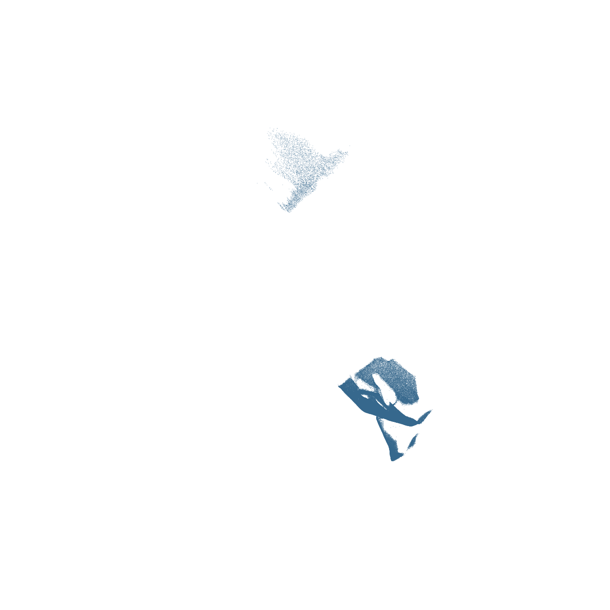
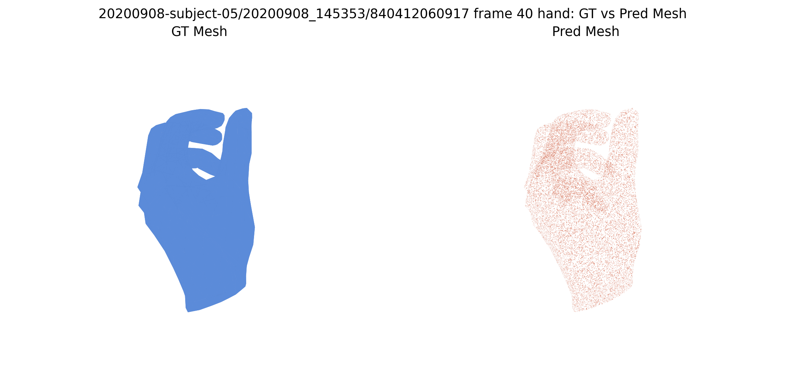
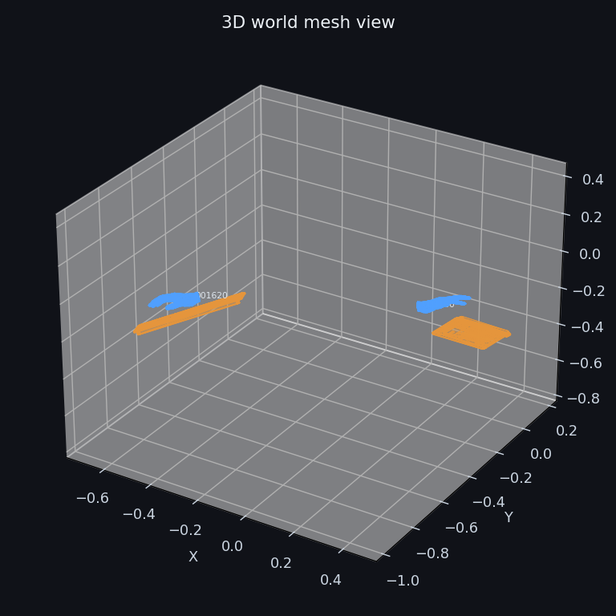
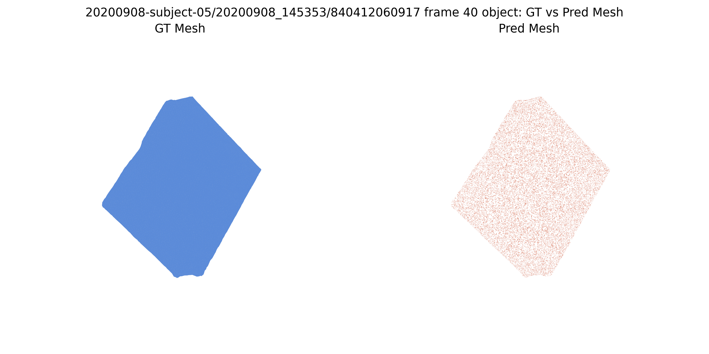
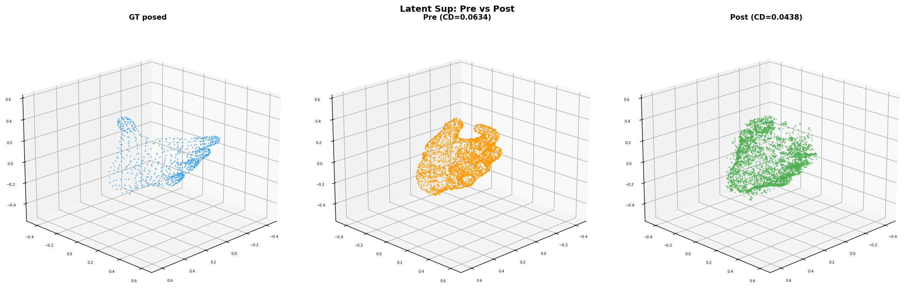
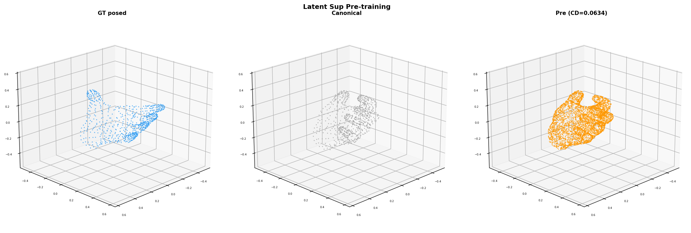
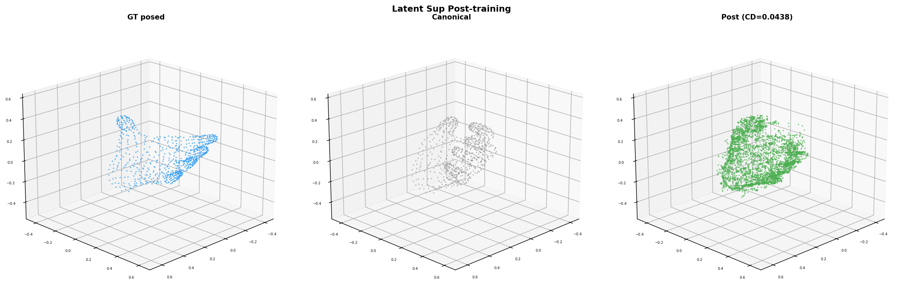
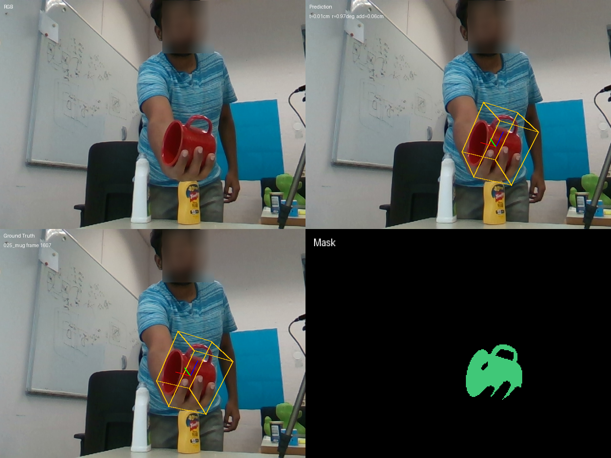

HOI3REnd-to-End 3D Reconstruction from Monocular Hand-Object Interaction Videos
Single RGB video → scene point clouds + camera poses + hand meshes + object meshes, all in a shared world coordinate system.
4
Output Modalities
STream3R + Trellis.2
Architecture
Phase 2
Current Stage
May 6
Submission Deadline
Input: monocular video frames (DexYCB)

Output: scene point cloud (120K pts)

Output: hand mesh (GT vs pred)
1 / Background
Why End-to-End HOI Reconstruction?
Isolated Pipelines
Hand recon (HaWoR) and object pose (FoundationPose) run independently — no shared scene understanding.
FoundationPose: object-only, no hand context
No Joint Reasoning
Without scene geometry and cameras, hand-object spatial relationships cannot be resolved.

FP + HaWoR combined: misalignment visible
Coordinate Fragmentation
Each method uses its own coordinate space. Post-hoc alignment introduces errors; prevents end-to-end training.
Camera-space overlay: alignment challenges
Our approach: A single model that jointly outputs point clouds, cameras, hand meshes, and object meshes in one shared world coordinate system, enabling end-to-end training with cross-modal supervision.
2 / Method Pipeline
Architecture: STream3R + Trellis.2 Fusion
Images
STream3R Encoder
Frozen
↓ image tokens
→
STream3R Decoder
Token fusion via cross-attention image tokens + hand/obj SLat
Optimized
→
Scene Heads
Point cloud + Camera
Optimized
Canonical Mesh
Trellis.2 SC-Encoder
Frozen
↓ Structured Latents
→
Token Bridge
SLat ↔ image tokens ~66K trainable params
Optimized
→
Trellis.2 SC-Decoder
Refined SLat → posed hand/object meshes
Optimized
Frozen Encoders
Preserve pretrained representations. No gradient through STream3R encoder or Trellis.2 SC-Encoder.
Token Bridge
Lightweight (~66K params) projection between SLat and STream3R token spaces. Core trainable fusion module.
Output: World W
All outputs in STream3R world coordinate (= first-frame camera). No post-hoc alignment needed.
3 / Main Method Progress
Phase 1 → Phase 2: Validation to Training
Phase 1 Done Branch Validation
STream3R: 120K point cloud from 5 DexYCB sequences
Hand mesh round-trip (sealed wrist)

Object mesh encode → decode
Phase 2 Active Training Closed-Loop

500-step overfit: GT posed (blue) vs pre-train (orange) vs post-train (green). CD: 0.063 → 0.044.
−31%
Chamfer Distance
0.044
Best CD (500 steps)
Key result: Canonical → posed deformation learning works. Token bridge + chamfer + latent supervision achieves 31% CD reduction on single-frame overfit, closing 23% of the deformation gap. Latent loss converges by step ~350, mesh loss continues improving.
3b / Training Evolution
Experiment Progression
Experiment
Setup
CD (post)
Key Finding
Latent-only overfit
200 steps, latent L2 loss only
—
Loss 1836→0.05, validates SLat round-trip
Mesh chamfer (Exp 1)
200 steps, chamfer loss
~0.055
Mesh-level supervision works but slow
Chamfer + latent (Exp 2a)
200 steps, chamfer + latent
0.052
Two-loss combo more stable
Exp 2a optimized
200 steps, shared-bbox norm, uniform scale
0.050
Correct normalization matters: 20% CD gain
Exp 2a, 500 steps
500 steps, chamfer + latent
0.044
Steady improvement, no oscillation, −31% CD

Pre-train: prediction = canonical shape

Post-train (500 steps): deformed toward GT
Canonical vs posed in shared MANO space
4 / Baseline Methods
Three-Lane Baseline Comparison
Object Pose: FoundationPose
Dataset
Trans.
Rot.
ADD
DexYCB
1.85 cm
41.2°
3.33 cm
HO3D
5.38 cm
23.7°
5.80 cm

704 clips DexYCB, 17 seqs HO3D. Full coverage.
Hand Recon: HaWoR
Method
AUC
Det. Rate
HaWoR
0.39
high
Dyn-HaMeR
0.003
low
HaWoR significantly stronger on DexYCB test. Dyn-HaMeR retained as weak baseline only.
Hand-Object: MagicHOI
Metric
Official
MPJPE-RA-R
3.5543
CD (ICP)
1.5352
F10 (ICP)
72.82
HO3D test. 1/5 seqs completed; evaluator alignment in progress.